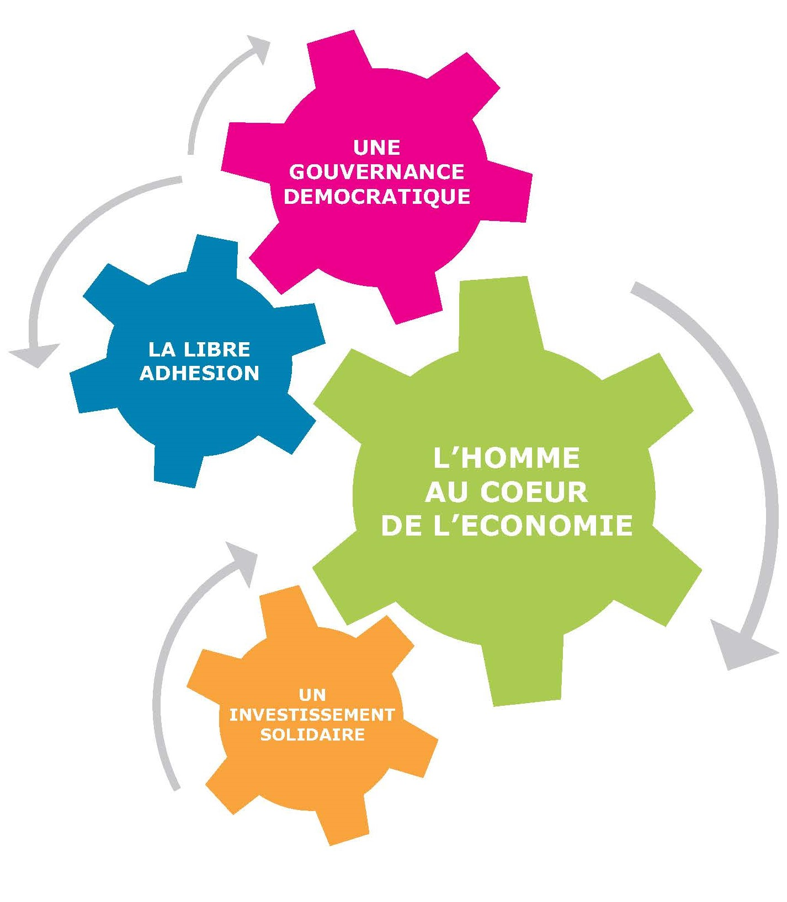

L’économie sociale et solidaire ou ESS est un type d’économie qui se caractérise par ces valeurs :
Une utilité sociale, car l’ESS ne délaisse pas de groupe de personnes, par exemple en ne faisant pas de produits ultra haut de gamme qui seraient trop chers. Coopération, pour favoriser l’entraide, ce qui va de paire avec l’encrage local qui permet à l’ESS d’être adaptée à chaque territoire et à leurs habitants. L’ESS est donc un concept intéressant, mais est-ce que ça marche ? En France, ce sont 215 000 entreprises qui ont optées pour ce modèle économique, notamment des clubs de sport, 90% de ces derniers relévent de l'ESS, ou encore les agriculteurs qui adhèrent à une coopérative pour ¾ d’entre eux.
